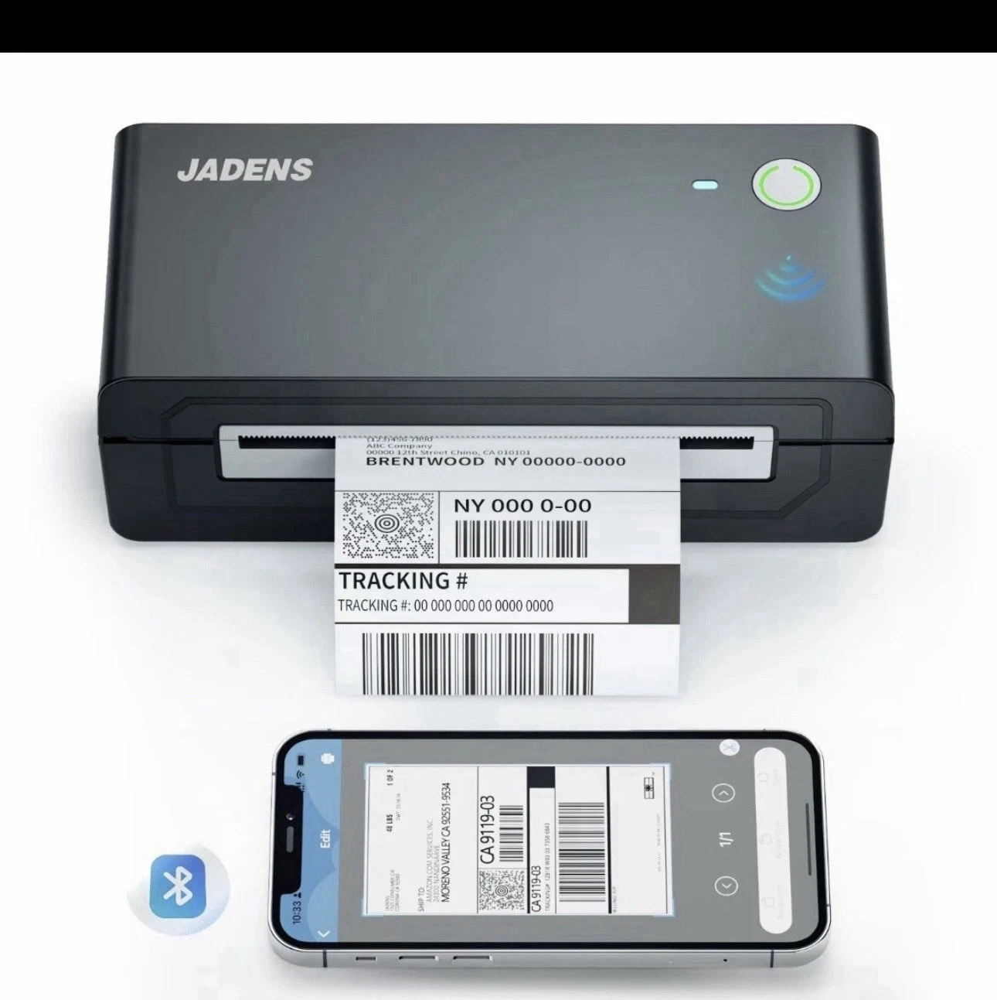

Available in black, white and pink. Choose your colour when ordering.
Thermal label printersBuy black — £58.99One-off purchase. Free UK shipping. Terms & Conditions agreed at secure Stripe checkout.
JADENS 668BT Bluetooth Shipping Label Printer
A compact thermal printer for shipping labels and everyday labelling. Print from your phone over Bluetooth, or connect to a Windows PC or Mac using USB.
- Print 4 × 6 inch shipping labels
- Direct thermal printing: no ink or toner
- Bluetooth connection for iOS and Android
- USB connection for Windows and macOS
£58.99
Free UK shipping · Dispatch in 1–3 days
Use the same email at checkout. Unsubscribe at any time. Privacy policy
Product specifications
- Brand
- JADENS
- Model
- 668BT
- Condition
- New
- Print technology
- Direct thermal · black and white
- Resolution
- 203 × 203 DPI
- Connections
- Bluetooth / USB